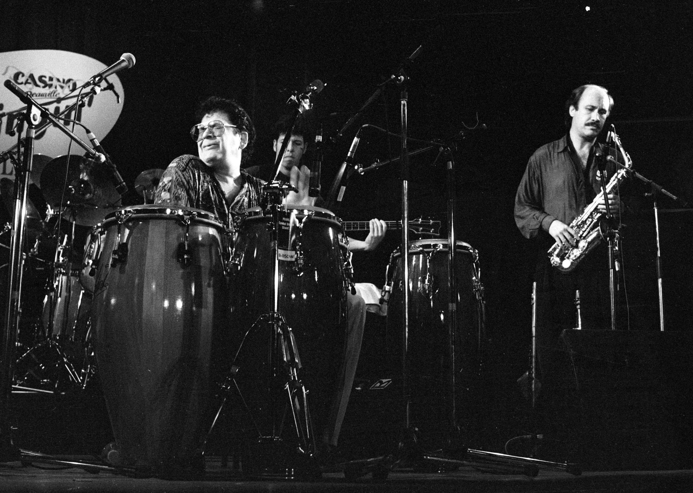

From Puerto Rico to New York
Salsa connects Cuban traditions, jazz, and Puerto Rican creativity. Its New York scene helped bring this music to a wider audience.
Read about Puerto Rican salsa at Fania

Clave y Sabor.
Meet the voices, orchestras, and rhythms connecting Puerto Rico and New York.
Discover the artistsListen for the repeating percussion and bass patterns.
Compare Héctor Lavoe, Ismael Quintana, and Ismael Rivera.
Try El Gran Combo, La Sonora Ponceña, and Roberto Roena.
Salsa connects Cuban traditions, jazz, and Puerto Rican creativity. Its New York scene helped bring this music to a wider audience.
Read about Puerto Rican salsa at Fania

Start with these Puerto Rican singers and orchestras.
Explore these voices and bandleaders next.
Choose an artist and follow a different instrument on each listen.
Explore artists at Fania Records